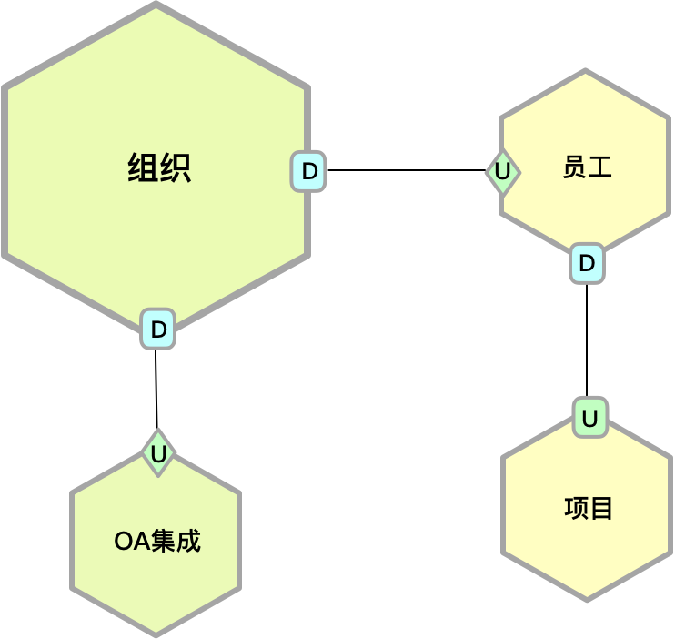

- 001 「战略篇」访谈 DDD 和微服务是什么关系？.md.html
- 002 「战略篇」开篇词：领域驱动设计，重焕青春的设计经典.md.html
- 003 领域驱动设计概览.md.html
- 004 深入分析软件的复杂度.md.html
- 005 控制软件复杂度的原则.md.html
- 006 领域驱动设计对软件复杂度的应对（上）.md.html
- 007 领域驱动设计对软件复杂度的应对（下）.md.html
- 008 软件开发团队的沟通与协作.md.html
- 009 运用领域场景分析提炼领域知识（上）.md.html
- 010 运用领域场景分析提炼领域知识（下）.md.html
- 011 建立统一语言.md.html
- 012 理解限界上下文.md.html
- 013 限界上下文的控制力（上）.md.html
- 014 限界上下文的控制力（下）.md.html
- 015 识别限界上下文（上）.md.html
- 016 识别限界上下文（下）.md.html
- 017 理解上下文映射.md.html
- 018 上下文映射的团队协作模式.md.html
- 019 上下文映射的通信集成模式.md.html
- 020 辨别限界上下文的协作关系（上）.md.html
- 021 辨别限界上下文的协作关系（下）.md.html
- 022 认识分层架构.md.html
- 023 分层架构的演化.md.html
- 024 领域驱动架构的演进.md.html
- 025 案例 层次的职责与协作关系（图文篇）.md.html
- 026 限界上下文与架构.md.html
- 027 限界上下文对架构的影响.md.html
- 028 领域驱动设计的代码模型.md.html
- 029 代码模型的架构决策.md.html
- 030 实践 先启阶段的需求分析.md.html
- 031 实践 先启阶段的领域场景分析（上）.md.html
- 032 实践 先启阶段的领域场景分析（下）.md.html
- 033 实践 识别限界上下文.md.html
- 034 实践 确定限界上下文的协作关系.md.html
- 035 实践 EAS 的整体架构.md.html
- 036 「战术篇」访谈：DDD 能帮开发团队提高设计水平吗？.md.html
- 037 「战术篇」开篇词：领域驱动设计的不确定性.md.html
- 038 什么是模型.md.html
- 039 数据分析模型.md.html
- 040 数据设计模型.md.html
- 041 数据模型与对象模型.md.html
- 042 数据实现模型.md.html
- 043 案例 培训管理系统.md.html
- 044 服务资源模型.md.html
- 045 服务行为模型.md.html
- 046 服务设计模型.md.html
- 047 领域模型驱动设计.md.html
- 048 领域实现模型.md.html
- 049 理解领域模型.md.html
- 050 领域模型与结构范式.md.html
- 051 领域模型与对象范式（上）.md.html
- 052 领域模型与对象范式（中）.md.html
- 053 领域模型与对象范式（下）.md.html
- 054 领域模型与函数范式.md.html
- 055 领域驱动分层架构与对象模型.md.html
- 056 统一语言与领域分析模型.md.html
- 057 精炼领域分析模型.md.html
- 058 彩色 UML 与彩色建模.md.html
- 059 四色建模法.md.html
- 060 案例 订单核心流程的四色建模.md.html
- 061 事件风暴与业务全景探索.md.html
- 062 事件风暴与领域分析建模.md.html
- 063 案例 订单核心流程的事件风暴.md.html
- 064 表达领域设计模型.md.html
- 065 实体.md.html
- 066 值对象.md.html
- 067 对象图与聚合.md.html
- 068 聚合设计原则.md.html
- 069 聚合之间的关系.md.html
- 070 聚合的设计过程.md.html
- 071 案例 培训领域模型的聚合设计.md.html
- 072 领域模型对象的生命周期-工厂.md.html
- 073 领域模型对象的生命周期-资源库.md.html
- 074 领域服务.md.html
- 075 案例 领域设计模型的价值.md.html
- 076 应用服务.md.html
- 077 场景的设计驱动力.md.html
- 078 案例 薪资管理系统的场景驱动设计.md.html
- 079 场景驱动设计与 DCI 模式.md.html
- 080 领域事件.md.html
- 081 发布者—订阅者模式.md.html
- 082 事件溯源模式.md.html
- 083 测试优先的领域实现建模.md.html
- 084 深入理解简单设计.md.html
- 085 案例 薪资管理系统的测试驱动开发（上）.md.html
- 086 案例 薪资管理系统的测试驱动开发（下）.md.html
- 087 对象关系映射（上）.md.html
- 088 对象关系映射（下）.md.html
- 089 领域模型与数据模型.md.html
- 090 领域驱动设计对持久化的影响.md.html
- 091 领域驱动设计体系.md.html
- 092 子领域与限界上下文.md.html
- 093 限界上下文的边界与协作.md.html
- 094 限界上下文之间的分布式通信.md.html
- 095 命令查询职责分离.md.html
- 096 分布式柔性事务.md.html
- 097 设计概念的统一语言.md.html
- 098 模型对象.md.html
- 099 领域驱动设计参考过程模型.md.html
- 100 领域驱动设计的精髓.md.html
- 101 实践 员工上下文的领域建模.md.html
- 102 实践 考勤上下文的领域建模.md.html
- 103 实践 项目上下文的领域建模.md.html
- 104 实践 培训上下文的业务需求.md.html
- 105 实践 培训上下文的领域分析建模.md.html
- 106 实践 培训上下文的领域设计建模.md.html
- 107 实践 培训上下文的领域实现建模.md.html
- 108 实践 EAS 系统的代码模型.md.html
- 109 后记：如何学习领域驱动设计.md.html
- 捐赠
034 实践 确定限界上下文的协作关系
通过上下文映射来确定限界上下文之间的协作关系，是识别限界上下文之后至为关键的一步。每个限界上下文都仅仅展示了整体架构全局视图的一角，只有将它们联合起来，才能产生合力，满足业务场景的需要。若这种协作关系处理不当，这种联合的合力反倒成了一种阻力，清晰的架构不见，限界上下文带给我们的“价值”就会因此荡然无存。
如果单从确定限界上下文之间的协作关系而论，要考量的设计要素包括：
- 限界上下文的通信边界
- 采用命令、查询还是事件的协作机制
- 定义协作接口
通信边界、协作机制与上下文映射模式的选择息息相关。例如，通信边界采用进程内通信，就可能无需采用开放主机服务模式，甚至为了保证架构的简单性，也无需采用防腐层模式。如果采用命令和查询的协作机制，可能会采用客户方/供应方模式，如果采用事件的协作机制，则需要采用发布者/订阅者模式。
在识别限界上下文协作关系的阶段，是否需要定义协作的接口呢？我认为是必要的。一方面接口的定义直接影响到协作模式，也属于架构中体现“组件关系”的设计内容；另一方面通过要求对协作接口的定义，可以强迫我们思考各种协作的业务场景，避免做出错误的上下文映射。如果在这个阶段还未做好框架的技术选型，接口的设计就不应该与具体的框架技术绑定，而是给出体现业务价值的领域模型，换言之，就是定义好当前限界上下文的应用服务，因为应用服务恰好体现了用例的应用逻辑。
识别 EAS 的上下文映射
在领域驱动设计中，以“领域”为核心的设计思想应当贯穿整个过程始终，确定系统的上下文映射自然也不例外。实际上，整个领域驱动的战略设计实践是存在连贯关系的，我们不能因为进入一个新的阶段，就忘记了前面获得的成果。决定上下文映射的重要输入就包括基于领域场景分析获得的用例图，基于用例图获得的限界上下文。
根据用例识别协作关系
为避免出现上下文映射的疏漏，我们应该根据业务场景来分析各种限界上下文协作的关系。这时，先启阶段领域场景分析获得的用例图就派上用场了。为了确保设计的严谨，我们应该“遍历”所有的主用例，理解用例的目标与流程，再结合我们已经识别出来的限界上下文判断它们之间的关系。
由于用例图中的用例传递的信息量有限，我们在识别协作关系时，可以进一步确定详细的流程，绘制更为详细的用例图甚至活动图。用例的好处在于不会让你遗漏重要的业务场景，而用例图中的包含用例与扩展用例，往往是存在上下文协作的信号。当然，在识别上下文协作关系时，还需要注意其中的陷阱。正如在[第 3-9 课：辨别限界上下文的协作关系（上）]中提到的那样，要理解协作即依赖的本质，正确辨别这种依赖关系到底是领域行为或领域模型的依赖，还是数据导致的依赖，又或者与限界上下文的边界彻底无关。
以“创建需求订单”用例为例，它的完整用例图如下所示：
主用例“创建需求订单”属于订单上下文，“指定客户需求承担者”属于客户上下文，“通知承担者”用例是“指定客户需求承担者”的扩展用例，但它实际上会通过 OA 集成上下文发送消息通知。若满足于这样的表面现象，可得出上下文映射（图中使用了六边形图例来表达限界上下文，但并不说明该限界上下文一定为微服务）：
然而事实上，在指定客户需求承担者时，订单上下文并非该用例的真正发起者，而是市场人员通过用户界面获得客户信息，再将选择的客户 ID 传递给了订单，订单上下文并不知道客户上下文。如此一来，消息通知的发送也将转为由订单上下文发起。于是，上下文映射变为：
目前获得的上下文映射自然不会是最终方案。不同的用例代表不同的场景，产生的协作关系自然会有所不同。在“跟踪需求订单”用例中，需要在用户界面呈现需求订单状态，同时还将显示需求订单下所有客户需求的客户信息和承担者信息，这就需要分别求助于客户上下文和员工上下文。因此，订单上下文的上下文映射就修改为：
“创建市场需求”用例图如下所示：
除了需要在订单上下文中创建市场需求之外，还要通过文件共享上下文完成附件的上传。此外，操作订单时需要对用户进行身份认证。最终，订单上下文的上下文映射就演变为：
有些限界上下文之间的关系是隐含的，需要透过用例去理解内在的业务流程才能探明这种关系。例如，“制定招聘计划”用例：
当招聘专员制定好招聘计划时，会发送消息通知招聘计划审核人，这个审核人就是人力资源总监。然而此时的招聘上下文并不知道谁是人力资源总监，只能通过招聘专员所属部门的组织层级去获得人力资源总监（用户角色）的信息，再通过该角色对应的 EmployeeId 到员工上下文获取人力资源总监的联系信息，包括手机和邮箱地址。得到的上下文映射为：
通过识别上下文映射，还会帮助我们甄别一些错误的限界上下文职责边界划定。例如，针对“添加项目成员”用例：
通过前面对限界上下文的识别，我们认为项目成员作为一种用户角色，项目组作为一个组织层级，从概念关联性看更适合放在组织上下文。当项目经理通过用户界面添加项目成员时，其流程为：
- 前置条件与项目关联的项目组已经创建好
- 选择要加入的项目组
- 列出符合条件的员工清单
- 选择员工加入到当前项目组
- 通知该员工已成为项目组的项目成员
- 将当前项目的信息追加到项目成员的项目经历中
注意，列出员工清单的功能属于员工上下文，但该操作是通过用户界面发起对员工上下文的调用，组织上下文并不需要获取员工清单，而是用户界面传递给它的。在员工加入到当前项目组后，组织上下文需要通过 OA 集成发送通知消息，还要通过员工上下文来追加项目经历功能。基于这样的流程，得到的上下文映射为：

然而考虑认证上下文，它又需要调用组织上下文提供的服务来判断用户是否属于某个部门或团队，这就在二者之间产生了上下游关系。由于认证上下文比较特殊，如果系统没有采用 API 网关，则作为通用子领域的限界上下文，会被多个核心子领域的限界上下文调用，其中也包括员工上下文与项目上下文，于是上下文映射就变为：
为了更好地体现协作关系，我在上图增加了箭头，加粗了相关连线。可以清晰地看到，上图粗线部分形成了认证、组织与员工三个限界上下文之间的循环依赖，这是设计上的“坏味道”。导致这种循环依赖的原因，是因为与项目成员有关的用例被放到了组织上下文中，从而导致了它与员工上下文产生协作关系，这充分说明了之前识别的限界上下文仍有不足之处。组织结构是一种领域，管理的是部门、部门层次、角色等更为普适性的特性。换言之，即使不是在 EAS 系统，只要存在组织结构的需求，仍然需要该限界上下文。如此看来，项目成员的管理应属于更加特定的业务领域。在添加项目成员时，领域逻辑仍然属于项目上下文，但建立成员与项目组之间的关系，则应交给更为通用的组织上下文，形成二者的上下游关系。经过这样的更改后，“追加项目成员的项目经历”用例就由项目上下文向员工上下文直接发起调用请求：
这个场景体现了上下文映射对限界上下文设计的约束和驱动作用。在调整了限界上下文的职责之后，避免了限界上下文之间的循环依赖，使得限界上下文的边界更加清晰，保证了它们之间的松散耦合，有利于整个系统架构的演化。
确定上下文协作模式
要确定上下文协作模式，首先需要明确限界上下文的通信边界，即确定为进程内通信还是进程间通信。采用进程间通信的限界上下文就是一个微服务。在[第 4-8 课：代码模型的架构决策]中，我总结了微服务的优势与不足。EAS 系统作为一个企业的内部系统，对并发访问与低延迟的要求并不高，可用性固然是一个系统该有的特质，但毕竟它不是“生死攸关”的一线生产系统，短时间出现故障不会给企业带来致命的打击或难以估量的损失。整体来看，在质量属性方面，除了安全与可维护性之外，系统并无特别高的要求。综上所述，我看不到需要建立微服务架构的任何理由。既然无需创建微服务架构，就不必遵守一个限界上下文一个数据库的约束，满足架构的简单原则，可以为整个 EAS 系统创建一个集中的数据库。
这一设计决策直接影响到决策分析上下文的实现方案。就目前的需求而言，我们似乎没有必要为实现该上下文的功能专门引入数据仓库。决策分析上下文具有如下特征：
- 访问的数据涵盖所有的核心子领域
- 决策分析仅针对数据执行查询统计操作
虽然决策分析上下文属于核心子领域，但针对这两个特征，我们决定“斩断”该上下文和其他上下文之间的业务耦合关系，让它直接访问数据库，并借鉴 CQRS 架构模式，不为它定义领域模型，而是创建一个薄的数据访问层，通过执行 SQL 语句完成高效直接的数据处理。
既然决定限界上下文之间采用进程内通信，我们该选择何种上下文映射模式呢？到上下文映射的“武器库”中看一看，原来我们不知不觉已经使用了“共享内核”模式，提取了文件共享上下文，同时还引入了扮演“防腐层”功能的 OA 集成上下文。
作为提供垂直领域功能的限界上下文，需要为前端的用户界面或其他客户端提供 RESTful 服务，于是为如下限界上下文建立“开放主机服务”：
- 订单上下文
- 合同上下文
- 客户上下文
- 员工上下文
- 考勤上下文
- 招聘上下文
- 储备人才上下文
- 培训上下文（该上下文是项目开发中期针对需求变更引入）
- 项目上下文
- 决策分析上下文
- 资源上下文
- 组织上下文
既然采用了进程内通信，且针对这样的企业系统，演变为微服务架构的可能性较低，为了架构的简单性，针对以上限界上下文之间的协作，并无必要引入间接的防腐层。至于它与外部的 OA 系统之间的协作，已经由 OA 集成上下文提供了“防腐”功能。
我们是否需要采用“遵奉者”模式实现限界上下文之间的模型重用呢？同样是设计的取舍，简单还是灵活，重用还是清晰，这是一个问题！限界上下文的边界控制力会在架构中产生无与伦比的价值，它可以有效地保证系统架构的清晰度。如果为了简单与重用而纵容对模型的“滥用”，可能会导致系统变得越来越糟糕。对于采用进程内通信的限界上下文，运用“遵奉者”模式重用领域模型，就会失去限界上下文存在的意义，使之与战术设计中的模块（Module）没有什么区别了。说好的限界上下文保证领域概念的一致性呢？例如，合同上下文、项目上下文、订单上下文都需要通过员工上下文获得员工的联系信息，那么最好的方式不是直接重用员工上下文中的 Employee 模型对象，而是各自建立自己的模型对象 Employee 或 TeamMember，除了具有 EmployeeId 之外，可以只包含一个 Contact 属性：
我们还需要确定限界上下文之间的调用机制，究竟是通过命令、查询还是事件？由于采用了进程内通信，限界上下文之间的协作方式应以同步的查询或命令机制为主。唯一的例外是将 OA 集成上下文定义为进程间通信的限界上下文，毕竟它的实现本身就是要跨进程调用 OA 系统。这个限界上下文要实现的功能都与通知有关，无论是短信通知、邮件通知还是站内通知，都没有副作用，且允许以异步形式调用，适合使用事件的调用机制。这种方式一方面解除了 OA 系统上下文与大多数限界上下文之间的耦合，另一方面也能够较好地保证 EAS 系统的响应速度，减轻主应用服务器的压力。唯一不足的是需要增加一台部署消息队列的服务器，并在一定程度增加了架构的复杂度。采用事件机制，意味着 OA 集成上下文采用了“发布者/订阅者”模式，其中 OA 集成上下文为订阅者：
定义协作接口
定义协作接口的重要性在于保证开发不同限界上下文的特性团队能够并行开发，这相当于为团队规定了合作的契约。集成是痛苦的，无论团队成员能力有多么强，只要没有规定好彼此之间协作的接口，就有可能导致系统模块无法正确地集成，或者隐藏的缺陷无法及时发现，最严重的是破坏了限界上下文的边界。我们需要像保卫疆土一样去守护限界上下文的边界，如果不加以控制，任何风吹草动都可能酿成“边疆”的风云突变。
注意，现在定义的是限界上下文之间协作的接口，并非限界上下文所有的服务接口，也不包括限界上下文对外部资源的访问接口。协作接口完全可以根据之前确定的上下文映射获得。在上下文映射图中，每个协作关系都意味着一个接口，不同的上下文映射模式可能会影响到对这些接口的设计。例如，如果下游限界上下文通过开放主机服务模式与上游协作，就需要定义 RESTful 或 RPC 接口；如果下游限界上下文直接调用上游，意味着需要定义应用服务接口；如果限界上下文之间采用发布者/订阅者模式，需要定义的接口其实是事件（Event）。
对于 EAS 系统而言，我们已经确定除与 OA 集成上下文之间采用“发布者/订阅者”模式之外，其余限界上下文之间的协作都是“客户方/供应方”模式，且无需引入防腐层和开放主机服务，因此，要定义的协作接口其实就是各个限界上下文的应用服务接口。在定义协作接口时，我们只需要规定作为供应方的上游应用服务即可。如果采用事件机制，协作接口就应该是对事件的定义。
以订单上下文为例，它的上下文映射图为（与前面上下文映射的不同之处是将订单与 OA 集成之间的协作改为了事件机制）：
记录与订单上下文相关的协作接口如下表所示：
在这个接口表中，我使用生产者（Producer）与消费者（Consumer）来抽象客户方/供应方模式与发布者/订阅者模式。表中的模式自然就是上下文映射模式。如有必要，也可以是多个模式的组合，比如客户方/供应方与开放主机服务之间的组合。当然，如果为开放主机服务，且发布语言为 RESTful，则后面的服务定义就应该是遵循 RESTful 服务定义的接口。
对于订单上下文与 OA 集成上下文之间的协作，正如前所述，我们采用了发布者/订阅者模式。因此，这里的协作接口实际上是对事件的定义。最初为了表达订单的领域概念，我将该事件定义为 OrderCompleted。回顾 OA 集成上下文的上下文映射，作为订阅者的 OA 集成上下文在接收到事件后，要做的事情都是将事件持有的内容转换为要发送消息通知的内容以及送达的地址，然后发送消息通知。显然，它订阅的事件应该是相同的，因为处理事件的逻辑完全相同。故而应该将 OrderCompleted 修改为 NotificationReady 事件。除了订单发布该事件外，合同、项目、组织等限界上下文都将发布该事件。
协作接口表格式并非固定或唯一。例如，我们也可以为每个接口定义详尽的描述：
- 接口， AuthenticationService
- 描述， 对操作用户进行身份认证
- 命名空间， paracticeddd.eas.authcontext.application
- 方法， authenticate(userId): AuthenticatedResult
- 模式，客户方/供应方模式
- 接口类型， 命令
协作接口定义的格式不是重要的，关键还是在战略设计阶段需要重视对它们的定义。只有这样才能更好地保证限界上下文的边界，因为除了这些协作接口，限界上下文之间是不允许直接协作的。协作接口的定义也是上下文映射的一种落地实践，要避免上下文映射在战略设计中沦为一幅幅中看不中用的设计图。同时，通过它还可以更好地遵循统一语言，保证设计模型与领域模型的一致性。
© 2019 - 2023 Liangliang Lee. Powered by gin and hexo-theme-book.